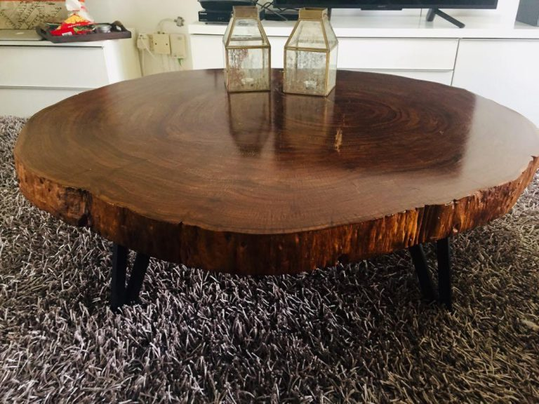

DETAILS INFORMATION
Surprisingly, little is known about the town beginnings. But from what we know, it was originally an old lumber town populated by both Malay and Chinese workers since the 1840s, hence the name Papan, Malay for Plank. The export of the day? Some hardy Chengal, used for boats, buildings and fancy furniture
Down the line, Chinese miners came in and started mining tin, though operations werent as expansive as in later years. And all that wood that Papan was harvesting? It helped provide material for equipment for the early mines, as well as fuel for later steam-powered machinery.
In 1875, the British took Papan and handed the town over to Mandailing Chief Raja Asal as thanks for his efforts in the Perak War. It was thanks to Raja Asal, and later his successor Raja Bilah that Papan tin mines were expanded just in time for a tin rush in the 1880s which made Papan immensely wealthy with some help from local Chinese magnates.

“On 29 November 1887, a brothel skirmish escalated into a secret society riot. A violent clash took place at Papan… There were 9,000 of them on one side and 8,000 on the other.”Excerpt from Raja Bilah and the Mandailings in Perak: 1875-1911
Insurgents nearly ground Papan industry to a halt
For context, when Japan invaded Malaya, the Malayan Communist Party (MCP) established the Malayan Anti-Japanese Army (MPAJA), which went underground soon after the British surrendered in 1942 and in Perak, Papan became a hotspot for MPAJA activity, notably a detachment of the MPAJA, the 5th Independent Regiment that was messing around in the forests surrounding the town. Though we cant find specifics regarding insurgent activity in Papan, we know that they at least had some help from Sybil Kathigasu, a nurse-turned-freedom fighter who made her mark in history by aiding the MPAJA.
Tin mining in Papan took a backseat at this point in time, with operations being scaled back immensely or completely stopped outright, and the brutality of the Japanese occupation probably didnt help much either. After World War II ended, mining resumed at Papan, but the continuing insurgency made things rather miserable until the end of the Malayan Emergency in 1960, when the forests around Papan were declared safe once more.